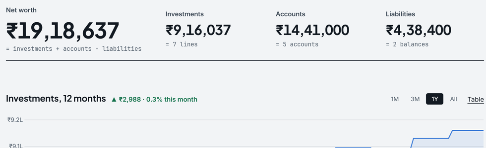
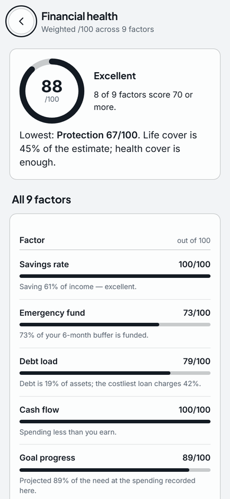

Six answers about your money, each with its sum.
Worked out on your computer, each sum shown, for the sample person: a salaried professional in Pune taking home ₹1,85,000 a month.
- What did September cost?
- ₹72,723 of ₹1,85,000 income
- Where do I stand?
- ₹19,18,637 net worth
- How healthy is it?
- 88 out of 100
- Enough to stop at 55?
- ₹8.45Cr against ₹6.44Cr needed
- What tax this year?
- ₹3,03,420 new regime
- Where is all of it?
- This computer no server, no account
Sample data · worked out by Pocket for 29 Sep 2026
₹72,723 spent in September, of ₹1,85,000 coming in.
A bank statement CSV, so no bank login, each entry categorised.
- Income₹1,85,000
- −Spent: housing ₹32,000, food ₹13,195, EMIs ₹11,800 and four more families₹72,723
- Kept, 61% of income₹1,12,277
Food is at 88% of its ₹15,000 budget. Pocket says so, and never tells you to spend less.

- September's spending against its income, and how it moved on the same days last month.
- Each family with its share and amount, largest first; food is at 88% of its ₹15,000 budget.

₹19,18,637 is where they stand, and here is the sum.
Invested, plus accounts, minus owed; each part opens to its lines.
- +Investments6 holdings and cash · 7 lines₹9,16,037
- +Accountscash & bank ₹3,05,000 · retirement ₹11,36,000₹14,41,000
- −Liabilitiescar loan ₹4,20,000 · credit card ₹18,400₹4,38,400
- Net worth₹19,18,637
A holding without a price is named and left out, never estimated.

- Net worth, written as the sum it is: investments + accounts − liabilities.
- The three parts it adds up, each with its count of lines.
- Investments over 12 months, on a 1M, 3M, 1Y or All scale.

88 out of 100, from nine factors you can redo by hand.
A weighted average of nine factors, each scored 0 to 100, with fixed, published weights.
| Factor | Weight | Score | Why, for the sample person |
|---|---|---|---|
| Savings rate | 15% | 100 | Saving 61% of income |
| Emergency fund | 15% | 73 | 73% of a six-month buffer is funded |
| Debt load | 15% | 79 | Debt is 19% of assets; the costliest loan charges 42% |
| Cash flow | 10% | 100 | Spending less than comes in |
| Goal progress | 10% | 89 | Projected 89% of the need at the spending recorded |
| Investing | 10% | 94 | 65% in growth assets |
| Budget discipline | 10% | 100 | Every budget on track |
| Protection | 10% | 67 | Life cover is 45% of the estimate; health cover is enough |
| Diversification | 5% | 100 | Spread across 5 asset classes |
(100 × 15 + 73 × 15 + 79 × 15 + 100 × 10 + 89 × 10 + 94 × 10 + 100 × 10 + 67 × 10 + 100 × 5) ÷ 100 = 87.8, shown as 88.

On course for 55, until the spending they actually recorded is counted.
The need and the projection, worked from the plan typed, beside what the entries show.
- The need₹6L a year today, grown 6% a year for 25 years = ₹25.75L a year at 55; × 25, the 4% rule₹6.44Cr
- The projectionfrom ₹20.52L in investments and retirement accounts, a ₹20,000 SIP rising 10% a year, at 10% a year₹8.45Cr
- On course, by ₹2.01Crat 55
Recorded: ₹73,920 a month spent (₹8.87L a year) and ₹17,999 of SIPs against the plan's ₹20,000. At that spending the need would be ₹9.52Cr, and ₹8.45Cr is 89% of it. Pocket shows both; the plan is yours.

- The verdict: projected ₹8.45Cr at 55 against ₹6.44Cr needed.
- What the entries show: ₹73,920 a month spent, and at that spending the need would be ₹9.52Cr.
- How it is worked out is one press away.
₹3,03,420 of tax for 2026–27, and ₹2,17,020 still to pay.
From the payslip: ₹2,03,500 a month gross, taxed on the Finance Act's slabs, rebate and marginal relief.
- Tax, new regime₹3,03,420
- −TDS from salary, ₹7,200 a month₹86,400
- Left to pay as advance tax₹2,17,020
Old regime, with 80C ₹1,33,200 and HRA ₹2,73,000: ₹4,23,821, so the new regime is ₹1,20,401 lower. The comparison comes with Founder Pro; the estimate is free.

- The year's tax on the new regime: ₹3,03,420.
- TDS from salary takes ₹86,400 off it.
- What is left to pay: ₹2,17,020.
All of it stays on this computer, and you can check that.
Every figure above was worked out on this machine. You can check the rest yourself.
| The claim | How to check it |
|---|---|
| No account | Install and open it: nothing asks for an email, a phone number or a password. |
| No bank login | Import takes a file you export from your bank or from CAMS and KFintech; there is no field for a bank password. |
| Your data is a file | It is one database in a FinOSData folder in your user folder. Copy it, back it up or delete it like any file. |
| Nothing leaves unless you switch it on | Settings, Privacy & security lists each connection, off until you turn it on, and what it would send. The Security page lists the same. |
| No trackers here either | Open your browser's network panel on this page: every request goes to mypocketfi.com. |
Pocket reports figures, targets and gaps. It is not SEBI-registered, gives no investment advice, and never moves money.
Not for you if
- you want your bank linked to it: Pocket reads the statement files you download, and never asks for a bank login.
- you only use an iPhone: the iPhone app comes with its App Store listing; today it is Windows, macOS, Linux and Android.
- you need its database encrypted on a Mac or Linux: that is Windows only so far (Android always encrypts), so use FileVault or full-disk encryption meanwhile.

See your own six answers.
Free for Windows, macOS, Linux and Android. It opens on the sample person until you add your first figure.
Download free